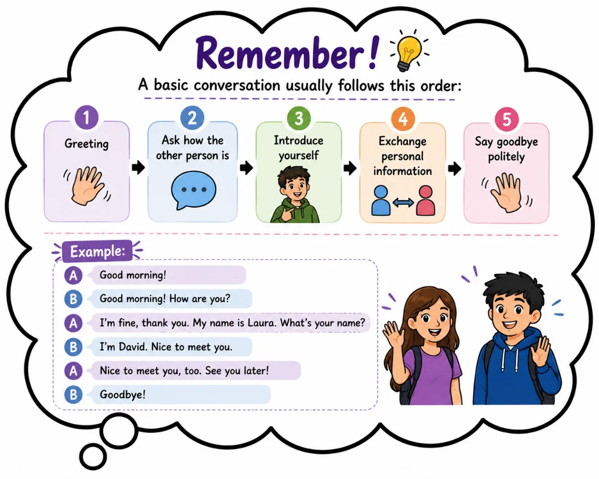
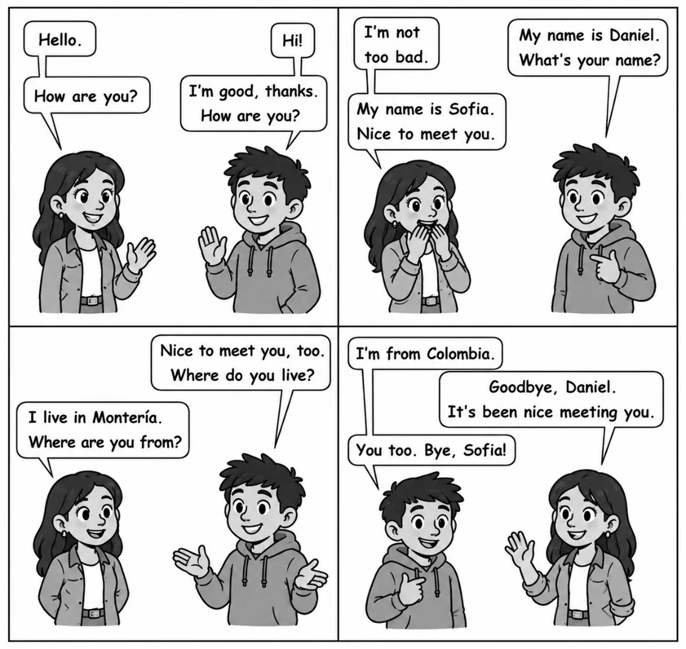
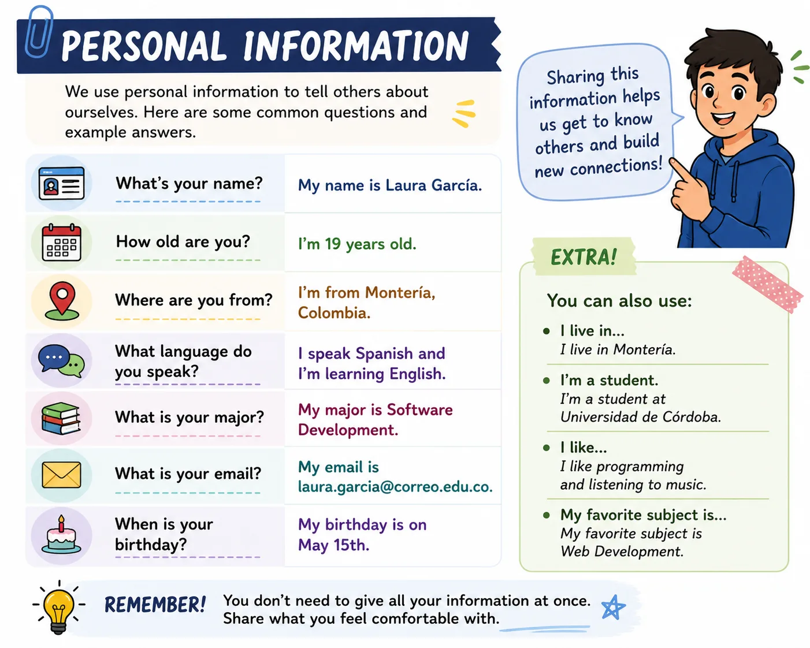
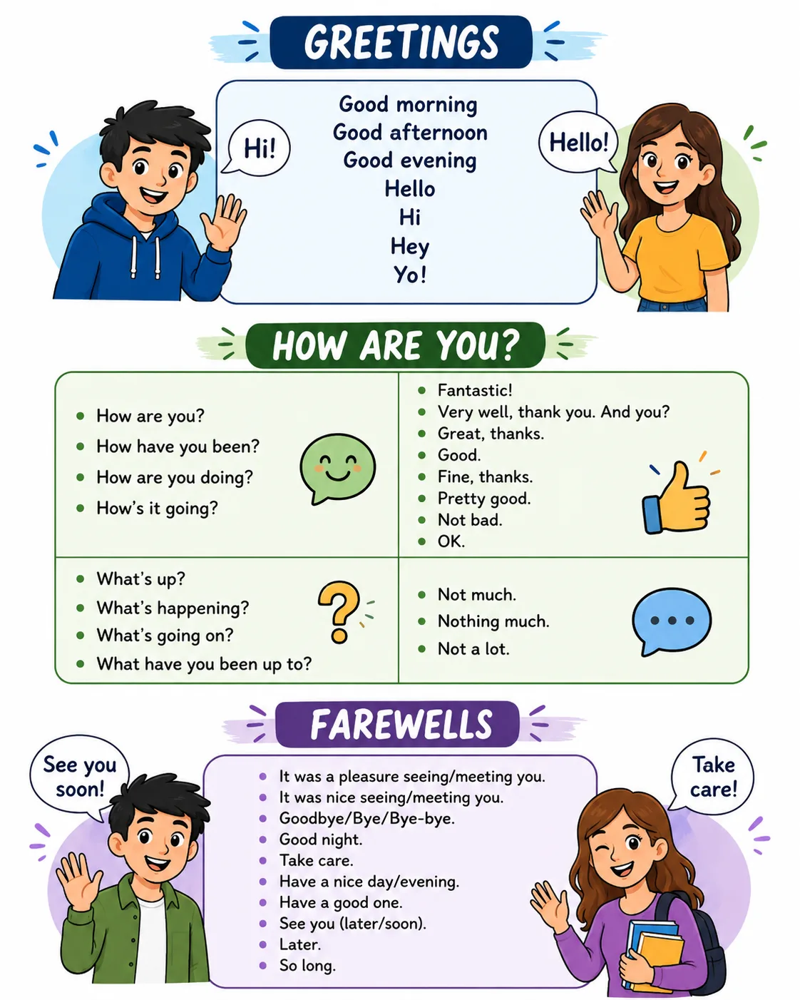
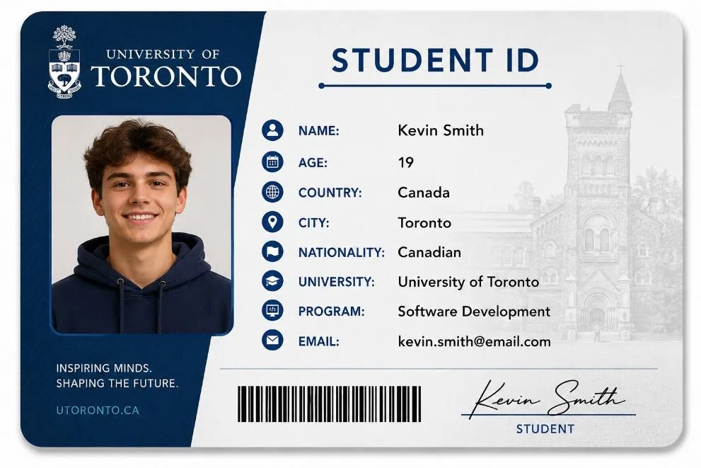

👋 Hello! Let's get started
En el mundo de la tecnología, el inglés está presente en programas, aplicaciones, páginas web, plataformas virtuales y recursos de aprendizaje. Por eso, desarrollar habilidades básicas en este idioma es clave para ti como estudiante de Tecnología en Desarrollo de Software. 💻
Aprender inglés comienza con acciones sencillas: saludar, presentarte y compartir información personal o académica. Estas expresiones te permiten iniciar conversaciones, conocer a otras personas y participar con más seguridad en contextos universitarios y profesionales.
En esta guía vas a aprender expresiones básicas para saludar, despedirte, presentarte y responder preguntas sencillas sobre ti. La idea es que empieces a usar el inglés como una herramienta práctica de comunicación para tu formación académica y tu futuro en el área tecnológica. 🚀
✨ Al terminar este OVA vas a poder saludar, presentarte y hablar de ti en inglés con más seguridad. 🎉

Objetivos de aprendizaje
- 👋 Utilizar expresiones básicas en inglés para saludar, despedirse, presentarse y presentar a otras personas en contextos universitarios y relacionados con el desarrollo de software.
- 💬 Intercambiar información personal y académica sencilla mediante preguntas y respuestas básicas en inglés, favoreciendo el desarrollo de habilidades comunicativas.
🔍 Modo exploración: recorre las 5 estaciones y suma puntos
⭐ Puntos: 0
Actividades
🎮 Modo misión activado — completa las 3 misiones
🏅 Misiones: 0/3
📖 Warm-up: Read the conversation

📝 Misión 1: Complete
Fill out the form with information about yourself. Use the examples in the infographic as a guide.

💬 Misión 2: Complete the conversation
Read the conversation and complete the blanks using the words in the box.

Word Bank
Hello • Good • name • Nice • from • How • fine • Goodbye
Laura: !
David: Hello! are you?
Laura: I'm , thank you. And you?
David: I'm , thanks.
Laura: My is Laura. What's your name?
David: I'm David. to meet you.
Laura: Nice to meet you, too. Where are you ?
David: I'm from Colombia.
Laura: ! See you later.
🕵️ Misión 3: Information Detective
Read the personal profile below.

Answer the questions.
Now... Write five new questions that could be asked to know more about Kevin.
Evaluación
Comprueba lo que has aprendido. Selecciona la respuesta correcta para cada pregunta.
Recursos para profundizar
Para ampliar tu conocimiento, te recomendamos explorar los siguientes recursos:
-
Meeting new people (British Council LearnEnglish)
Práctica de habla nivel A1 para saludar y conocer gente nueva, con video y ejercicios.
Ir al recurso -
Greeting & introducing (British Council LearnEnglish Teens)
Colección de ejercicios sobre cómo saludar, presentarse y despedirse en inglés.
Ir al recurso -
At the library – giving personal information (British Council)
Práctica de escucha nivel A1 sobre cómo dar información personal en inglés.
Ir al recurso -
Questions: personal information (AgendaWeb)
Ejercicio interactivo para practicar preguntas y respuestas de información personal en inglés.
Ir al recurso
Bibliografía
https://learnenglish.britishcouncil.org
https://dictionary.cambridge.org